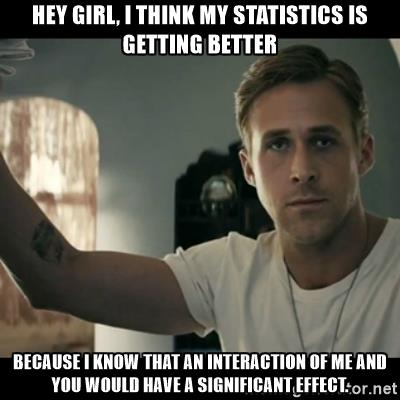
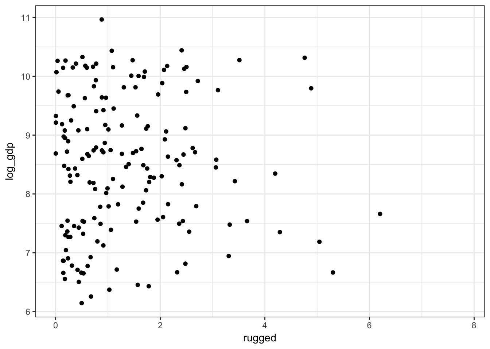
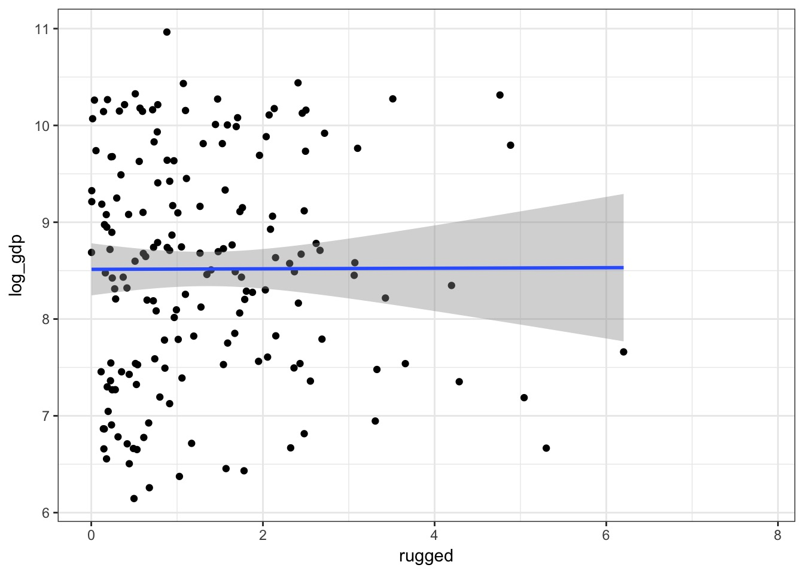
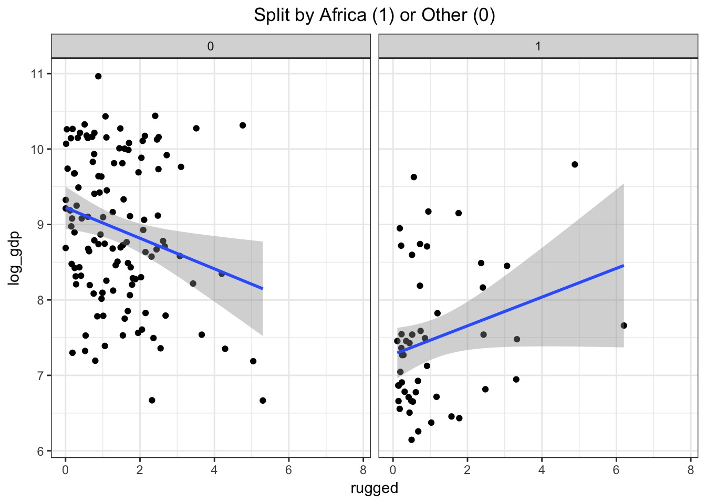
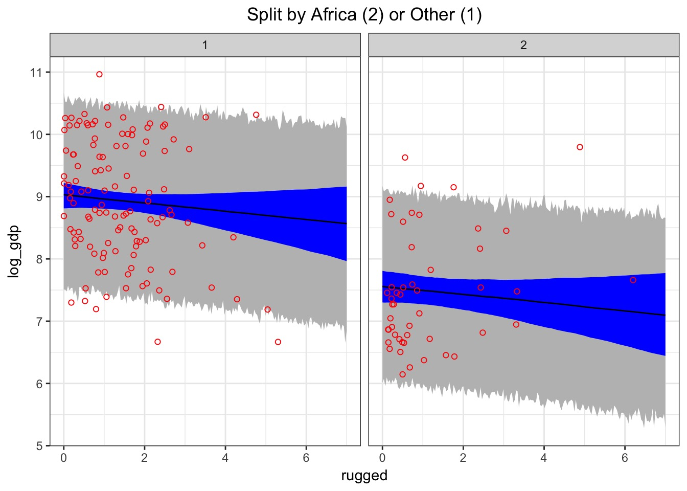
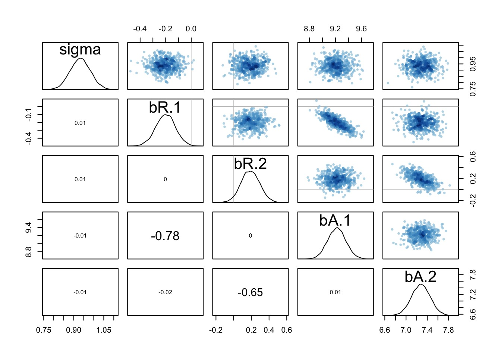
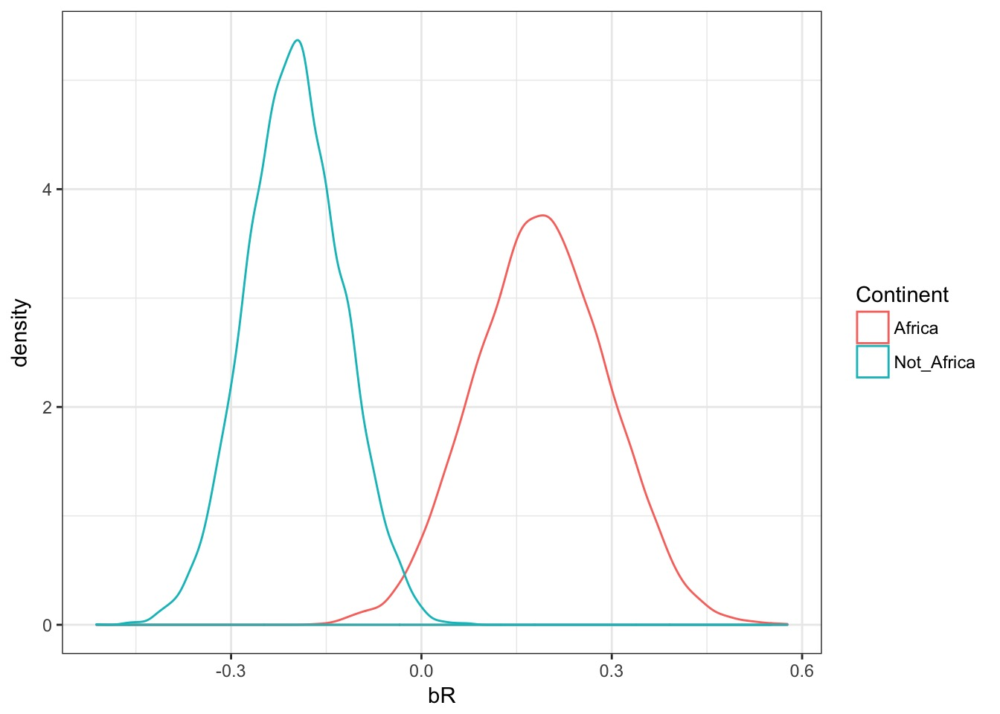
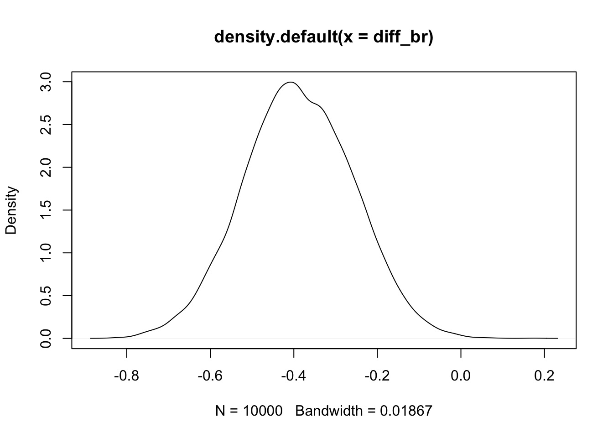
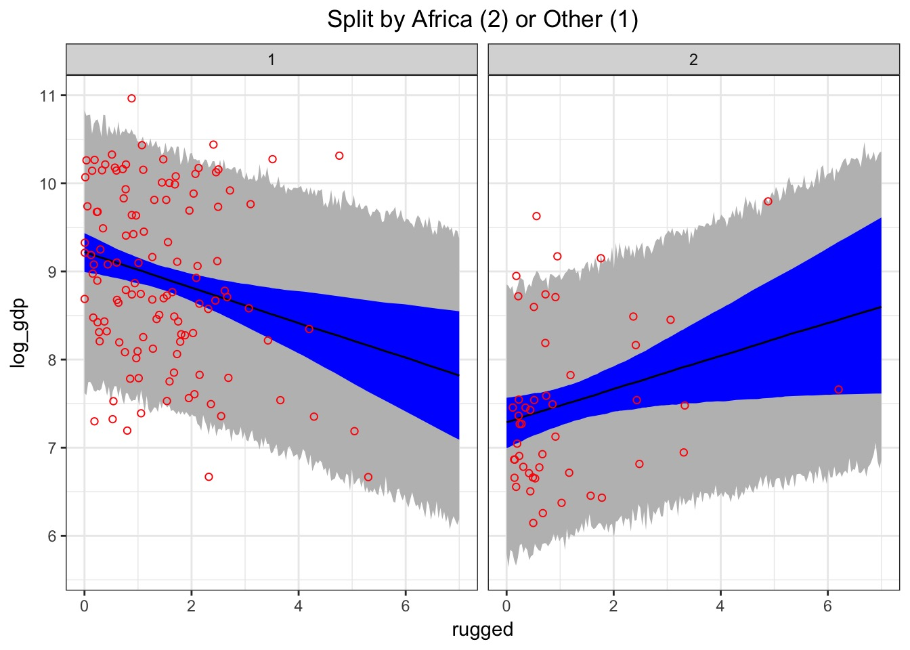
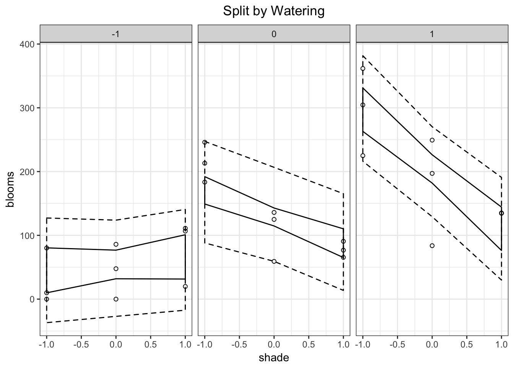

data(rugged)
rugged$log_gdp <- log(rugged$rgdppc_2000)


#prep the data
d <- rugged[complete.cases(rugged$log_gdp),]
#need indices >0
d$cont_africa <- d$cont_africa +1
#The model
mod_no_int <- alist(
#likelihood
log_gdp ~ dnorm(mu, sigma),
#data generating process
mu <- bA[cont_africa] + bR*rugged,
#priors
bR ~ dnorm(0,1),
bA[cont_africa] ~ dnorm(8,100),
sigma ~ dunif(0,10))
fit_no_int <- map(mod_no_int, data=d)
No Interaction:
mu <- bA[cont_africa] + bR*rugged,
#OR
mu <- a + bA[cont_africa] + bR*rugged,Interaction 1:
mu <- bA[cont_africa] + bR*rugged,
bR <- bR_0 + bR_1*cont_africamu but incorporates new informationbR_1 is difference from non-African bRInteraction 2
mu <- bA[cont_africa] + bR*rugged + bR_1*cont_africa,bR_1 has same meaning as beforeInteraction 3
mu <- bA[cont_africa] + bR[cont_africa]*rugged,int_mod <- alist(
#likelihood
log_gdp ~ dnorm(mu, sigma),
#Data generating process
mu <- bR[cont_africa]*rugged + bA[cont_africa],
#priors - note indexing!
bR[cont_africa] ~ dnorm(0,1),
bA[cont_africa] ~ dnorm(8,100),
sigma ~ dunif(0,10)
)
int_fit <- map(int_mod, data=d)Note depth=2 for groups
precis(int_fit, depth=2, cor=TRUE) Mean StdDev 5.5% 94.5% bR___1 bR___2 bA___1 bA___2 sigma
bR[1] -0.20 0.08 -0.32 -0.08 1.00 0.00 -0.79 0.00 0
bR[2] 0.19 0.10 0.02 0.36 0.00 1.00 0.00 -0.66 0
bA[1] 9.22 0.14 9.00 9.44 -0.79 0.00 1.00 0.00 0
bA[2] 7.28 0.18 6.99 7.56 0.00 -0.66 0.00 1.00 0
sigma 0.93 0.05 0.85 1.01 0.00 0.00 0.00 0.00 1bR changes in sign between groups!


samps <- extract.samples(int_fit)
names(samps)[1] "sigma" "bR" "bA" head(samps$bR) [,1] [,2]
[1,] -0.15179570 0.27818267
[2,] -0.17523714 0.09972111
[3,] -0.15245867 0.34652585
[4,] -0.09268935 0.11231884
[5,] -0.14039837 0.25779016
[6,] -0.19623546 0.21929095#Not Africa v. Africa
diff_br <- samps$bR[,1] - samps$bR[,2]
99.9% were < 0
They are quite likely different
What can you say so far?

data(tulips)
head(tulips) bed water shade blooms
1 a 1 1 0.00
2 a 1 2 0.00
3 a 1 3 111.04
4 a 2 1 183.47
5 a 2 2 59.16
6 a 2 3 76.75tulip_mod <- alist(
#likelihood
blooms ~ dnorm(mu, sigma),
#Data generating process
mu <- a + bW*water + bS*shade + bWS*water*shade,
#priors
a ~ dnorm(130,100),
bW ~ dnorm(0,100),
bS ~ dnorm(0,100),
bWS ~ dnorm(0,100),
sigma ~ dunif(0,100)
)fit_tulip <- map(tulip_mod, data=tulips)Error in map(tulip_mod, data = tulips): non-finite finite-difference value [5]
Start values for parameters may be too far from MAP.
Try better priors or use explicit start values.
If you sampled random start values, just trying again may work.
Start values used in this attempt:
a = 150.331309039261
bW = 187.446212728008
bS = -41.3825724654428
bWS = 80.3598233487261
sigma = 60.5601385002956Nelder-Mead often works, but slowerSANN also works, but sloooowfit_tulip_1 <- map(tulip_mod,
data=tulips,
method="Nelder-Mead")or
tulip_cent <- tulips %>% mutate(shade = shade-mean(shade),
water = water-mean(water))
fit_tulip_2 <- map(tulip_mod,
data=tulip_cent) fit_tulip_1 fit_tulip_2
a -49.50 128.98
bW 136.79 74.97
bS 20.49 -41.12
bWS -33.70 -51.95
sigma 47.37 45.25
nobs 27 27 tulip_pred_df <- crossing(shade = -1:1, water = -1:1)